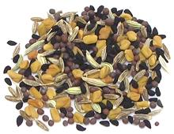

 |
Panch PhoronIndia - Bengal - Panch Phoron Bengali 5 spice | ||||
| Makes: Effort: Sched: DoAhead: |
5 T * 5 min Yes |
This spice mix is much used in northeastern India (West Bengal, Bihar, Odisha, Jharkhand, and Assam) as well as Bangladesh and parts of Nepal. | |||
|
1 1 1 1 1 |
T T T T T |
Cumin Seed Fennel Seed Mustard Seed (1) Fenugreek Seed Nigella (2) |
Make - (5 min)
|
NOTES: